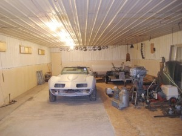

Dealing with stuff
Over the years the old farm has collected stuff. Everything was saved that might be usable later. The last years I have been working to clean up the place. Metals need to be recycled, saleable things need to find there way to people that have a use for them. I also look for things that tell me more about my brother, my father and my grandfather.
The picture on the left shows the old truck van body my brother brought out here in the early 1970′s. Dad owned the farm at that time, and Phil, who worked in St.Paul, needed a place to store good stuff. It was full of all kinds of car, truck and old tractor parts. There were also old tools and farm things. By the time I bought the farm from Dad, the farm grove had grown thick around not only the old Van, but around the junk cars, old tractors and machinery. It was barely visible so it made very little difference.
What was a good, weather tight storage unit had deteriorated over the years. My brother had also aged and lost both interest and energy to do anything with it, so it mainly sat undisturbed for the last 25 years. The last ten years I kept a plastic tarp tied down on top to keep rain out. My brother thought that his sons would want all these good things. I remember the disappointment on his face when they stood here telling him there was nothing in there that they wanted. When My brother passed away, I became owner of all that good stuff.
Over the years we have cleaned up the farm grove. Cutting up the dead and broken trees. Removing Buckthorn and planting grass. This made the Junk an eyesore, so one of my main retirement projects has been the clean up. This fall with my hog barn converted to good storage I started the Van clean up. The next picture on left shows the inside of the van when I had it mostly empty. I regret not having taken more pictures. The Van was so full you couldn’t tell what was at the far end. It was a bigger project than I anticipated. Plastic pails, full of bolts and parts, turned to almost dust as you tried to move them. Cardboard boxes did the same. Field Mice had had a good home in there and years of dirt and dust had blown in. The wood floor of the Van had rotted away in places so carrying heavy things out was a bit touchy.
I was never sure what was all in there so I turned down an offer from a scrap iron dealer to just haul it away.
I hauled trailer loads to my shop, blew the dirt off with my air compressor, and then sorted things. I didn’t find much good stuff, but it was an interesting project. Most things needed cleaning either with the wire wheel or the sand blaster to be sure what they were. Than copper, brass, iron, aluminium all needed to be sorted for scrap. Because time was slipping by, some bigger thing were just cleaned off and moved to storage to be dealt with next spring.
{kind=link}
{kind=link}
{kind=link}
Many thing that had value once, were now deteriorated beyond use or just obsolete. Old bolts had always been saved because they were useful for fixing old farm machinery. Now they were rusty and of sizes that I will never use, so on to the iron dealer. I handled the small iron scrap by putting it in cleaned out empty one gallon paint pails. The small stuff could be shaken down tight, than the cover hammered on. This made handling easier, preventing the scattering of old nails and stuff.

These last two pictures show the inside of my storage building. Hub caps have been hung on the wall for decoration. Also you can see the tail of Dads old wind generator from the 1930′s. We had no electric power on the farm, so the wind was used to charge a spare car battery so we could have radio.
I still have much to deal with yet but I am making headway. Next spring all the old tractor parts will be gone. Where the van body stood will become lawn again.
{kind=link}
{kind=link}
{kind=link}